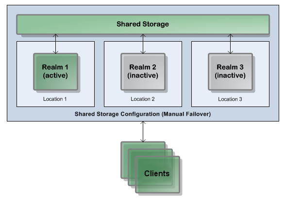

About Active/Passive Clustering
Introduction
Active/passive clustering is a concept that uses clustering software and special purpose hardware to minimize system downtime. Active/passive clusters are groups of computing resources that are implemented to provide high availability of software and hardware computing services. Active/passive clusters operate by having redundant groups of resources (such as CPU, disk storage, network connections, and software applications) that provide service when the primary system resources fail.
In a high availability active/passive clustered environment, one of the nodes in the cluster will be active and the other nodes will be inactive. When the active node fails, the cluster can fail over to one of the inactive nodes. This can be automated using dedicated third-party software, allowing you to start the resources on the redundant node in a predefined order (or resource dependency) to ensure that the entire node comes back up correctly.
Universal Messaging can run in an active/passive cluster environment, under Windows or UNIX. This approach does not provide load balancing or scalability.
What is active/passive clustering?
An active/passive cluster has multiple UM server nodes that share the same “data directory”, the storage area where the configuration and persistent message data for the cluster are kept. In contrast to the active/active approach, only one of the nodes in an active/passive cluster will be running at once.
If the running (active) cluster node fails, one of the non-running (passive) nodes can be started to replace it. Identification of the failure of the active node and the starting of the replacement node must be orchestrated by a system external to UM such as third-party clustering software or virtual machine infrastructure. Because all of the cluster nodes access the same data directory, the new node will be able to resume processing where the failed node left off. As with the active/active approach, all clients connected to the failed node will need to fail over to the new one. Again, provided that the clients are correctly configured this process is transparent to the applications and no messages will be lost.
Typically, active/passive clusters will use load balancers and third-party clustering software to manage failover and hide the fact that only one node is active from clients, but this is not required.
The active/passive clustering capability provided by Universal Messaging is essentially identical to that offered by the webMethods Broker. Any approach that has been used successfully to implement active/passive clustering with the Broker should also work with UM, with minimal changes.
Active/passive clustering requirements
You need the following to configure a Software AG Universal Messaging active/passive cluster:

Cluster control software to manage the clusters on Windows or UNIX.
Shared Storage for sharing data files.
IP address for running the Universal Messaging cluster service.
Universal Messaging installed on the cluster nodes in the same directory path (for example, C:\SoftwareAG). In the installations, the data directory path for the shared storage must be the same.
Note:
Universal Messaging installation must be identical on all cluster nodes. All instances of Universal Messaging must point to the same Universal Messaging storage files on the shared storage.
Shared storage configurations
In a Shared Storage configuration, multiple realm servers point to the same data directory (i.e. they share a single virtual or physical disk), but only one of the realm servers is online at any time.
In fact, shared storage must only be accessed by the active node at any one time! Multiple realm server processes accessing the same shared storage directory are likely to lead to data loss.
Shared Storage configurations are not technically a cluster, but they do provide the basic mechanism for rapid failover between realms:
Single active realm with two inactive backup realms in a Shared Storage configuration.
Universal Messaging capabilities for active/passive clustering
The following capabilities of Universal Messaging enable the vendor-specific cluster control software to monitor and manage Universal Messaging in an active/passive cluster.
Functionality to start, stop, and monitor the servers.
Ability to store the server’s state information and data on a shared disk.
Ability to survive a crash and restart itself in a known state.
Ability to meet license requirements and host name dependencies.
How should an active/passive cluster be deployed?
As with an active/active cluster, it is essential that each node in an active/passive cluster is deployed on physically separate hardware, to reduce the risk of a single hardware failure affecting multiple cluster nodes. When virtualization is being used, this means that each node must run on a virtual machine that is pinned to a different physical host. In the case of blade servers, it is recommended that each cluster node runs on a blade in a different chassis.
However, in contrast to the active/active case, the storage used by active/passive cluster nodes must be shared. Every node in the cluster will be configured to use the same network-accessible storage location for its data directory. This storage should be resilient against failures so it does not become a single point of failure for the cluster. Typically this means that a replicated SAN with a dedicated network should be used rather than a simple NAS.
When virtualization is used, it is highly recommended to allocate enough virtual resources to every node to handle the maximum expected load on the cluster, and to ensure these resources are not shared with any other virtual machine. This will help to prevent outages caused by a shortage of shared hardware resources during periods of high load